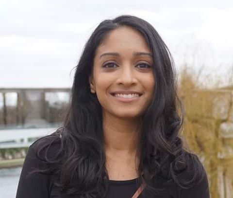
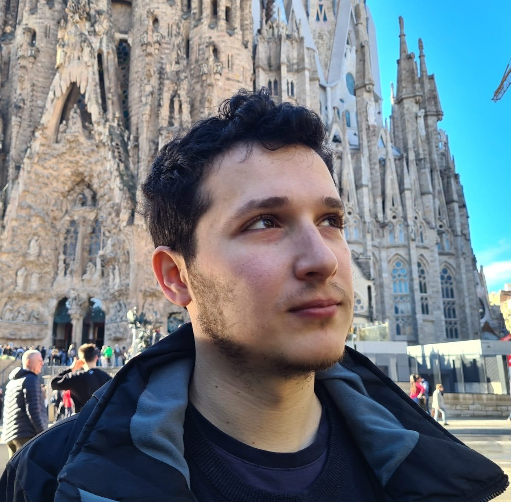
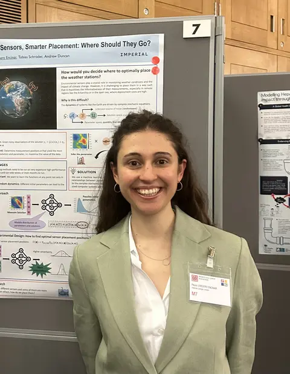
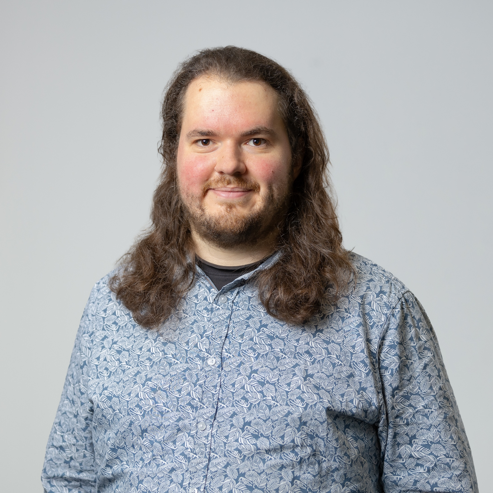

Sahani Pathiraja
UNSW Sydney
Archive / 2025
A one-day workshop on continuous dynamics and gradient-flow methods for sampling, inference and learning, spanning theory, practical implementation, generative modelling, Bayesian posterior sampling, parameter estimation, variational inference and optimisation.
Published recording
The complete workshop recording is published below.
Six invited talks
Researchers presented recent work on theoretical foundations and practical methods at the intersection of probability, statistics, machine learning and applied mathematics.

UNSW Sydney

University of Warwick

ENSAE / CREST

Imperial College London

University College London / DeepMind

University of Manchester
Talks
The official archive lists six invited presentations. Talk titles below follow the published event record.
Talk descriptions
Full abstracts from the published event record.
Maximum marginal likelihood estimation and Empirical Bayes are fundamental procedures in statistics and machine learning. They arise, for instance, in parameter inference problems within state-space models, probabilistic principal component analysis, missing data problems, and more. First, we will discuss various algorithms for tackling this estimation problem, which implement various optimization strategies on the free energy functional (i.e. minus ELBO).
These include, among others, the EM algorithm and some gradient flows methods recently introduced in the literature. Then, we will introduce a fundamental functional inequality that characterizes the fast convergence of all these algorithms. We will see how this inequality generalizes upon the log-Sobolev and Polyak-Łojasiewicz inequalities, establishing connections with various concepts and results in optimal transport.
We investigate the theoretical properties of general diffusion (interpolation) paths and their Langevin Monte Carlo implementation, referred to as diffusion annealed Langevin Monte Carlo (DALMC), under weak conditions on the data distribution. Specifically, we analyse and provide non-asymptotic error bounds for the annealed Langevin dynamics where the path of distributions is defined as Gaussian convolutions of the data distribution as in diffusion models.
We then extend our results to recently proposed heavy-tailed (Student's t) diffusion paths, demonstrating their theoretical properties for heavy-tailed data distributions for the first time. Our analysis provides theoretical guarantees for a class of score-based generative models that interpolate between a simple distribution (Gaussian or Student's t) and the data distribution in finite time. This approach offers a broader perspective compared to standard score-based diffusion approaches, which are typically based on a forward Ornstein-Uhlenbeck noising process.
We propose a gradient flow procedure for generative modeling by transporting particles from an initial source distribution to a target distribution, where the gradient field on the particles is given by a noise-adaptive Wasserstein Gradient of the Maximum Mean Discrepancy (MMD). The target distribution is provided simply as a sample, and the procedure may be used to generate new samples from this target, representing an alternative to classical score-based diffusions.
We obtain conditions for convergence of the gradient flow towards a global optimum, and relate this flow to the problem of optimizing neural network parameters. We provide empirical validation of the MMD gradient flow in the settings of neural network training and image generation.
Tempering techniques have emerged as powerful tools for enhancing the efficiency of Langevin dynamics in sampling from complex distributions in Bayesian inference. This talk explores recent advances in tempering methods, focusing on geometric tempering and its impact on convergence rates. We discuss theoretical insights, including cases where tempering may be beneficial or not.
Additionally, we discuss alternative strategies to geometric tempering based on diffusion processes. Based on joint works with Omar Chehab and Adrien Vacher.
Deep neural networks and other modern machine learning models are often susceptible to adversarial attacks. Indeed, an adversary may often be able to change a model's prediction through a small, directed perturbation of the model's input – an issue in safety-critical applications. Adversarially robust machine learning is usually based on a minmax optimisation problem that minimises the machine learning loss under maximisation-based adversarial attacks.
In this work, we study adversaries that determine their attack using a Bayesian statistical approach rather than maximisation. The resulting Bayesian adversarial robustness problem is a relaxation of the usual minmax problem. To solve this problem, we propose Abram – a continuous-time particle system that shall approximate the gradient flow corresponding to the underlying learning problem.
We show that Abram approximates a McKean–Vlasov process and justify the use of Abram by giving assumptions under which the McKean–Vlasov process finds the minimiser of the Bayesian adversarial robustness problem. We discuss two ways to discretise Abram and show its suitability in benchmark adversarial deep learning experiments.
It has long been posited that there is a connection between the dynamical equations describing birth-death & evolutionary processes in biology (so-called “replicator-mutator” dynamics) and sequential Bayesian learning methods. This talk describes new research in which this precise connection is rigorously established in the continuous time setting.
Gradient flow formulations with respect to the Fisher-Rao metric relevant to sampling will be investigated, as well as connections to stochastic filtering where the conditional distribution of a hidden state given a continuous time sequence of observations is sought. Specifically, we demonstrate how a piecewise smooth approximation of the observation path allows one to link quadratic fitness replicator-mutator dynamics and the fundamental equation of nonlinear filtering, the Zakai equation.
Additionally, we show how a non-local form of replicator-mutator dynamics can be recognised as covariance-inflated Kalman dynamics and investigate benefits for misspecified model Linear-Gaussian filtering. It is hoped this work will spur further research into exchanges between sequential learning and evolutionary biology and to inspire new algorithms in filtering and sampling.